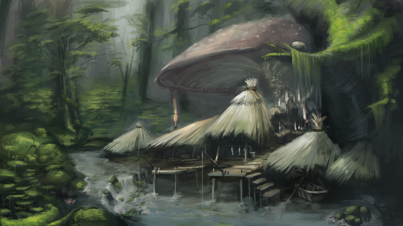
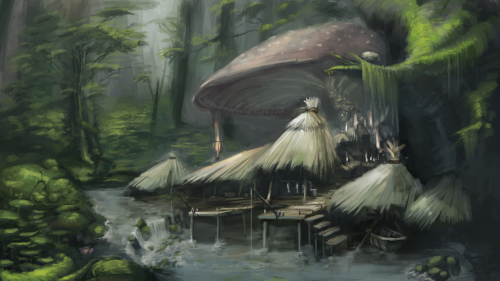

| Home | Wireframes | Graphics | Icons | Typography | D. Media | Final |
|---|
As mentioned many times in the documentation, the emphasis on not including a lot of detailed art that was part of the site still needs to be retained. This meant that the only big candidates for dynamic behavior were the logo and the site icons. I ultimately decided against making either animated since it could very quickly be distracting with the three tandem slideshows that the website currently employs. The main dynamic nature of the site is in the CSS animations that it employs and the kind of scenes and story they tell.
When the site first opens you are introduced to three panels that slide into position over a black box frame. The box frame is a persistent structure whose dimensions are always ultimately upkeep despite whatever transitions occur. Next comes the user having to interact with the site. The user seeing the three panels will likely try to interact with them and when hovering over them will see a fade out to a panel of a different color. If the user finds themselves on the main screen for too long slideshows will begin that replace the panel elements. In the selected active view the user sees their selection persist while the other two options come in to view from an overflow. This repetition of icons indicates that they will lead to the same menu that the other panels would have done. In the mobile view a similar approach is taken with simpler animation choices that aim to distract less with what little screen real estate is available.
 
